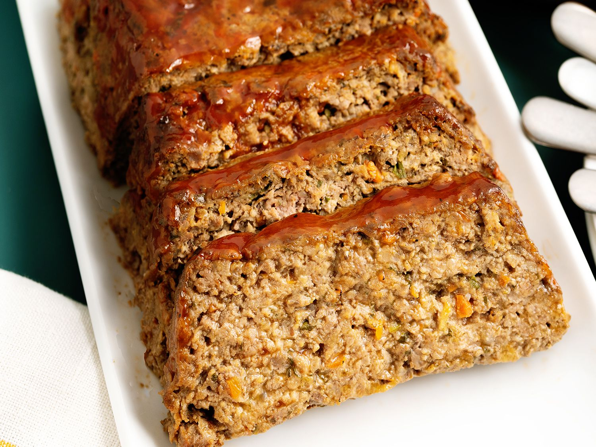

Meatloaf

Description
The classic Peck meatloaf recipe
Ingredients
- Half Ground Beef
- Half Ground Pork
- Half can of tomatoe paste
- 1 egg
- 1/4 cup Breadcrumbs
- Onion soup mix
- Salt and Pepper
- 1/4 cup diana sauce
Steps
- Preheat oven to 350 degrees
- Mix all ingedients in large bowl
- Add breadcrumbs, Salt and pepper to top of meatloaf
- Bake for 1 hour (drain fat after 1/2 hour)